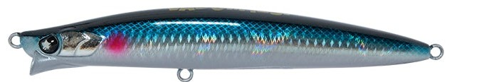
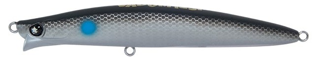
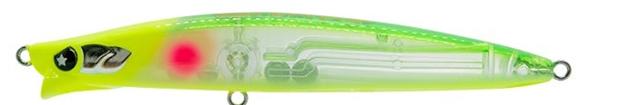
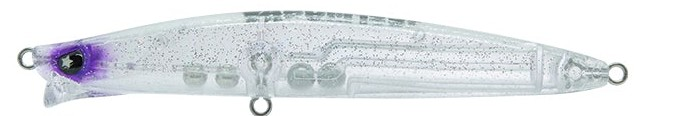

ヴァダム125F
（VADUM125F）
ヴァダム125F（VADUM125F）はLEGARE（レガーレ）のシャローランナーミノーです。
「VADUM（ヴァダム）」はラテン語で”浅瀬”を意味し、その名の通りシャロー攻略のために生み出されたフローティングミノー。あえてアピールを抑えたロール主体の”静”のアクションで、スレきった魚やタフな状況でも見切られずに喰わせることを狙った1本です。

画像出典:LEGARE公式HP
スペック
- メーカー
- LEGARE（レガーレ）
- タイプ
- フローティング（シャローランナー）
- 全長
- 125mm
- 自重
- 21g
- フック
- #4
- リング
- #3
- アクション
- ウォブンロール
- ターゲット
- シーバス
- 価格
- 2,860円（公式オンラインストア）
- 発売
- 2026年
▼今すぐチェック

ヴァダム125Fの特徴
アピールを抑えた「静」のアクションで、スレた魚にも自然に喰わせる王道シャローランナー
-
ロール主体の”静”のアクションで見切られにくい
あえてアピールを抑えたウォブンロール（ロール主体）のアクションで、プレッシャーの高いポイントやスレた魚にも違和感を与えにくい。強い波動で反応しない場面の「食わせ役」として投入しやすい。
-
ダウンクロスでも破綻しない安定性
流れに対してダウンクロスで引いても泳ぎが破綻しにくく、狙ったレンジとコースを正確にトレースできる。流れの変化で生まれる一瞬の”揺らぎ”がバイトのきっかけになる。
-
安定した飛距離で明暗・ヨレを射程に
21gの自重で安定した飛距離を確保。明暗の境目やヨレ、ブレイク周りなど、繊細なアプローチが求められるポイントへ正確に届けられる。
ヴァダム125Fの使い方
基本はスロー〜ミディアムのただ巻き。ロール主体の控えめなアクションを活かし、余計なロッドアクションを入れずに一定速度で巻くのが基本です。
河川や河口では、アップクロスにキャストしてダウンクロスで流れに乗せながら巻くと、流れの変化を受けた瞬間の”揺らぎ”でバイトを引き出しやすくなる。明暗の境目やヨレの中をコースを決めて通し、同じコースをスピードだけ変えて探っていくのが組み立ての基本です。
ヴァダム125Fの得意な状況
水深の浅い河川・河口・干潟などのシャローエリアが主戦場。
強いアピールのルアーに反応が無くなったスレた状況や、明暗・ヨレ・ブレイク周りなど「コース取り」が釣果を分ける場面で真価を発揮します。メーカーが「シーズンも状況も選ばず先発からクローザーまで」と打ち出している通り、1軍のシャローミノーとしてボックスに入れておきたい1本です。
ワンポイント
アピールが控えめな分、ルアーを動かそうとしてロッドをあおるよりも、流れに対する角度と巻きスピードでコースとレンジを調整するのがコツです。
反応が無いときは、立ち位置を変えて同じ明暗・ヨレに別の角度から通すと、それまで見切っていた魚が口を使うことがあります。
人気カラー
ヴァダム125Fは全15色展開。シャローのシーバス狙いでオススメのカラーを厳選して紹介します。

リアルベイトイワシ系のリアルなホロカラー。澄み潮やデイゲームのナチュラルな見せ方に。

マットボラシャローに多いボラ（イナッコ）を意識したマット系。光を抑えたシルエットでスレた魚に。

CHBモヒートチャートヘッドの高視認カラー。マズメや濁り潮、ナイトゲームのアピールに。

スピネルラメ入りのクリア系。常夜灯周りや澄み潮で、より存在感を消したいときに。
画像出典:LEGARE公式HP
ヴァダム125Fに似ているルアー
-
 コモモ125カウンター
ima
詳細はこちら＞
コモモ125カウンター
ima
詳細はこちら＞
全長125mm・自重22gの海水サスペンドモデル。シャローランナーの名作コモモSF-125の基本性能はそのままに、なめらかに抑えたアクションで一枚下のレンジをナチュラルに通せる。「アピールを抑えて喰わせる」という狙いがヴァダム125Fと近い1本。
-
 ショアラインシャイナーZ バーティスR 125F-SSR
ダイワ
詳細はこちら＞
ショアラインシャイナーZ バーティスR 125F-SSR
ダイワ
詳細はこちら＞
全長125mm・自重20.3gのスーパーシャローランナー。有効レンジ約30〜50cmのヌルヌルとしたロールアクションで、表層付近をおとなしく引けるのがヴァダム125Fと共通する。平均72.1mの飛距離で、より遠くのシャローを狙いたい場面に。
-
 TKLM 12/18
タックルハウス
詳細はこちら＞
TKLM 12/18
タックルハウス
詳細はこちら＞
全長120mm・自重18gのフローティングリップレスミノー。リップが無い分、流れの中でのスライドアクションで食わせるタイプで、ヴァダム125Fと同じく浅場の大型シーバスを狙うシャロー攻略の1本。ヴァダムのロールとは違う動きで見せたいときの持ち替えに。